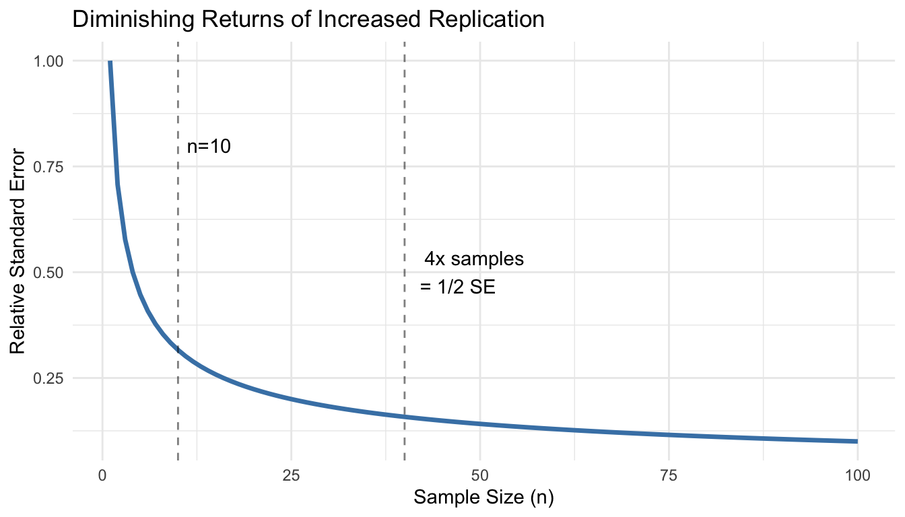

The quality of your conclusions depends fundamentally on the quality of your experimental design. No amount of sophisticated statistical analysis can rescue a poorly designed experiment. As the saying goes, “to consult the statistician after an experiment is finished is often merely to ask him to conduct a post mortem examination. He can perhaps say what the experiment died of.”
Good experimental design determines what questions you can answer, what conclusions you can draw, and how confidently you can draw them. A well-designed experiment maximizes the information gained from available resources while minimizing bias and unwanted variation.
In bioengineering, experimental design is particularly critical because:
Biological systems are inherently variable
Resources (reagents, subjects, time) are often limited and expensive
Ethical considerations constrain what manipulations are permissible
Regulatory requirements for medical devices and therapies demand rigorous evidence
This chapter covers the fundamental principles that underlie all good experimental design, from laboratory studies to clinical trials. These principles apply whether you are testing a new biomaterial, characterizing cellular responses, or evaluating a medical device.
Before diving into design principles, it helps to establish precise terminology. Figure 15.1 provides clear definitions of key terms that are often confused—measurement, observation, population, sample, and variable—with concrete biological examples.
Figure 15.1: Key experimental terminology with definitions and examples. Understanding the distinction between these terms—particularly the difference between a statistical population and a sample—is essential for proper experimental design and analysis.
15.2 Key Principles of Experimental Design
Replication
Replication means repeating measurements on independent experimental units. True replication provides independent estimates of the effect you are studying and allows you to quantify variability.
True Replication vs Pseudoreplication
True replication involves independent experimental units—separate subjects, cultures, or measurements that could, in principle, have different outcomes.
Pseudoreplication occurs when you treat non-independent measurements as if they were independent. This is one of the most common and serious errors in experimental design.
Example of pseudoreplication:
Suppose you want to test whether a new growth factor increases cell proliferation. You prepare one culture dish with the growth factor and one control dish, then count cells in 10 different fields of view from each dish.
Sample size: NOT n = 10. You have n = 1 per treatment.
Problem: All 10 measurements from the same dish are not independent. If that particular dish has contamination or was handled differently, all measurements are affected.
Solution: Prepare multiple independent culture dishes (e.g., 5 treatment, 5 control) and treat the dish as the experimental unit.
Common Sources of Pseudoreplication
Measuring multiple locations on the same specimen
Multiple measurements on the same subject at the same time point
Multiple samples from the same culture or batch
Subsampling from pooled samples
Multiple tests on the same tissue section
Always ask: Are these measurements truly independent, or could they be more similar to each other than to measurements from a different experimental unit?
How Much Replication?
More replication increases statistical power and precision, but with diminishing returns. The relationship is governed by the standard error:
\[SE = \frac{\sigma}{\sqrt{n}}\]
Doubling sample size reduces standard error by only 41% (since \(\sqrt{2} \approx 1.41\)). To halve the standard error requires quadrupling the sample size.
Practical considerations:
Use power analysis to determine minimum sample size (Chapter 25)
Pilot studies help estimate expected effect sizes and variability
Consider practical constraints (cost, time, ethical limits)
Plan for attrition or exclusions (add 10-20% buffer)
Code
# Relationship between sample size and standard errorn <-1:100se_relative <-1/sqrt(n)ggplot(data.frame(n = n, se = se_relative), aes(x = n, y = se)) +geom_line(color ="steelblue", size =1.2) +geom_vline(xintercept =c(10, 40), linetype ="dashed", alpha =0.5) +annotate("text", x =10, y =0.8, label ="n=10", hjust =-0.2) +annotate("text", x =40, y =0.5, label ="4x samples\n= 1/2 SE", hjust =-0.2) +labs(title ="Diminishing Returns of Increased Replication",x ="Sample Size (n)",y ="Relative Standard Error") +theme_minimal()

Figure 15.2: Standard error decreases with the square root of sample size, showing diminishing returns from additional replication
Randomization
Randomization is the use of a random process to assign experimental units to treatments or to determine the order of operations. Randomization serves two critical purposes:
Eliminates systematic bias that could arise from assignment procedures
Provides the basis for statistical inference by ensuring treatment groups are comparable
Without randomization, systematic differences between groups could confound your results. If you always process treatment samples in the morning and controls in the afternoon, time-of-day effects become confounded with treatment effects.
How to Randomize
Use a random number generator, not human judgment. Humans are terrible at generating random sequences—we create patterns even when trying not to.
Code
# Example: Randomize 20 subjects to two treatment groupsset.seed(42) # For reproducibilitysubjects <-paste0("Subject_", 1:20)# Create random assignmentassignments <-data.frame(subject = subjects,treatment =sample(rep(c("Control", "Treatment"), each =10)))# View first few assignmentshead(assignments)
subject treatment
1 Subject_1 Treatment
2 Subject_2 Control
3 Subject_3 Control
4 Subject_4 Control
5 Subject_5 Control
6 Subject_6 Control
For more complex designs:
Code
# Randomize with unequal allocation (2:1 treatment:control)subjects <-paste0("Subject_", 1:30)assignments <-data.frame(subject = subjects,treatment =sample(rep(c("Treatment", "Control"), times =c(20, 10))))table(assignments$treatment)
Control Treatment
10 20
Restricted Randomization
Sometimes complete randomization can lead to imbalanced groups by chance. Permuted block randomization ensures balance:
Code
# Block randomization: ensure equal allocation every 4 subjectslibrary(blockrand)
Error in `library()`:
! there is no package called 'blockrand'
Error in `blockrand()`:
! could not find function "blockrand"
This approach is common in clinical trials to prevent severe imbalance.
Blocking
Blocking is grouping experimental units into homogeneous sets (blocks) and ensuring each treatment appears within each block. Blocking controls for known sources of variation, increasing the precision of comparisons.
When to Block
Block when you can identify sources of variation that:
Are not of primary interest but affect the response
Can be controlled during experimental design
Are substantial relative to experimental error
Common blocking factors in bioengineering:
Time: Day of experiment, batch, season
Location: Incubator, bench position, laboratory
Biological variation: Litter, donor, cell passage number
Technical factors: Operator, instrument, reagent lot
Example: Blocked Design
Testing three culture conditions (treatments A, B, C) across different days:
Without blocking (completely randomized): - Day 1: A, A, A, B, B, B - Day 2: C, C, C
Day effects are confounded with treatment effects!
With blocking: - Day 1 (Block 1): A, B, C - Day 2 (Block 2): A, B, C - Day 3 (Block 3): A, B, C
Each treatment appears once per block. Day-to-day variation is removed from the treatment comparison.
Block Treatment Run_Order
1 1 B 4
2 1 C 8
3 1 A 10
4 2 A 2
5 2 B 3
6 2 C 7
7 3 C 1
8 3 A 6
9 3 B 12
Analysis of Blocked Designs
Include the blocking factor in your statistical model:
Code
# ANOVA with blockingmodel <-lm(response ~ treatment + block, data = my_data)anova(model)
The blocking factor accounts for block-to-block variation, increasing power to detect treatment effects.
Controls
Controls are reference conditions used to establish baseline performance and validate experimental procedures. Different types of controls serve different purposes.
Types of Controls
Negative Controls demonstrate what happens in the absence of treatment:
Untreated cells in a drug study
Buffer-only injection
Empty vector in a transfection experiment
Sham surgery (all procedures except the intervention)
Negative controls establish baseline and show that observed effects are due to treatment, not handling or measurement.
Positive Controls demonstrate that the system can respond:
Known active compound at established dose
Successfully transfected cells with a reporter gene
Calibration standards
Previous validated batch
Positive controls verify that experimental conditions are suitable for detecting an effect. If positive controls fail, the experiment cannot distinguish true negatives from technical failures.
Vehicle Controls account for delivery method:
Cells treated with DMSO at the same concentration used to dissolve drugs
Saline injection to match treatment injection volume
Empty nanoparticles without payload
Vehicle controls distinguish drug effects from effects of the carrier or solvent.
Internal Controls provide within-sample references:
Housekeeping genes in qPCR
Loading controls in Western blots
Untreated wells on the same plate
Internal controls account for sample-to-sample variation in technical factors.
Controls in Bioengineering Applications
When testing a new biomaterial: - Negative control: Standard tissue culture plastic or untreated tissue - Positive control: Established biomaterial known to support cell growth - Vehicle control: Scaffold material without bioactive modification
When evaluating gene delivery: - Negative control: Cells without transfection - Positive control: Transfection with established reporter - Vehicle control: Empty vector or delivery vehicle alone
15.3 Types of Studies
Understanding study types helps you choose appropriate designs and recognize their limitations.
Observational vs Experimental Studies
Observational studies observe subjects without intervention:
Researchers do not assign treatments
Cannot control confounding variables
Can identify associations but not prove causation
A classic illustration of how confounding can mislead is Simpson’s Paradox, shown in Figure 15.3. The famous Berkeley admissions data appeared to show gender bias in graduate admissions—overall, men were admitted at higher rates than women. However, when examining admission rates within each department separately, women were actually admitted at equal or higher rates. The paradox arose because women disproportionately applied to more competitive departments with lower overall admission rates. This example demonstrates why controlling for confounding variables is essential in observational studies.
Figure 15.3: Simpson’s Paradox illustrated with university admission data by gender and department. While aggregate data suggested bias against women, department-level analysis revealed that women applied disproportionately to departments with lower admission rates. This classic example shows how confounding variables can completely reverse apparent relationships.
Examples: - Cohort studies following patients with different genetic variants - Surveys of device use patterns - Analysis of patient records
These criteria help evaluate observational findings, but randomized experiments remain the gold standard.
Prospective vs Retrospective Studies
Prospective studies follow subjects forward in time:
Define groups and measurements before data collection
Collect data specifically for the research question
Better control over data quality and completeness
More expensive and time-consuming
Retrospective studies look backward using existing data:
Use previously collected data (medical records, databases)
Faster and less expensive
Limited to available variables
More prone to missing data and measurement inconsistencies
Cross-sectional vs Longitudinal Studies
Cross-sectional studies measure each subject once:
Snapshot at a single time point
Compare different subjects in different conditions
Cannot assess within-subject change
Faster and less expensive
Longitudinal studies measure subjects repeatedly over time:
Track change within individuals
Can assess temporal dynamics
Require more complex statistical methods
Subject to dropout and attrition
More expensive but more powerful for detecting change
Example: Testing a new wound dressing
Cross-sectional: Compare healing rates in patients using new vs standard dressing at 1 week post-surgery
Longitudinal: Measure wound size at days 0, 3, 7, 14 in patients randomized to new vs standard dressing
The longitudinal design provides more information about healing trajectories and requires fewer total subjects.
15.4 Clinical Trial Design
Clinical trials evaluate medical interventions in human subjects. Regulatory agencies (FDA, EMA) require specific design features to ensure valid and ethical evidence.
Phases of Clinical Trials
Clinical trials progress through sequential phases, each with distinct objectives:
Phase I: Safety and Dosing
Primary goal: Assess safety and determine appropriate dosing
Subjects: Small number (20-80) of healthy volunteers (exceptions for cancer/severe disease)
Design: Dose escalation, often starting far below expected therapeutic dose
Primary goal: Definitively establish efficacy and safety
Subjects: Large number (300-3000+) of patients
Design: Randomized controlled trials with appropriate controls
Duration: 1-4 years
Outcomes: Primary efficacy endpoint, safety profile, comparison to standard of care
Successful Phase III trials support regulatory approval (FDA, EMA).
Phase IV: Post-Market Surveillance
Primary goal: Monitor long-term effects and rare adverse events
Subjects: Thousands to millions of patients in real-world use
Design: Observational studies, registries, electronic health record analyses
Duration: Ongoing after approval
Outcomes: Rare adverse events, long-term outcomes, effectiveness in broader populations
Device vs Drug Trials
Medical devices often follow different regulatory pathways than pharmaceuticals:
510(k) clearance: Demonstrate substantial equivalence to existing device (no clinical trial required)
Premarket Approval (PMA): High-risk devices require clinical evidence similar to Phase III drug trials
Breakthrough Device Program: Expedited review for devices treating life-threatening conditions
Device trials may emphasize performance and safety over traditional efficacy endpoints.
Randomized Controlled Trials (RCTs)
The randomized controlled trial is the gold standard for evaluating interventions:
Key features:
Randomization: Subjects randomly assigned to treatment groups
Control group: Comparison group receiving standard care or placebo
Prospective: Follow subjects forward in time
Pre-specified outcomes: Primary endpoint defined before data collection
Advantages:
Randomization eliminates systematic bias
Allows causal inference
Provides strongest evidence for regulatory approval
Limitations:
Expensive and time-consuming
May exclude important patient subgroups (strict eligibility criteria)
Controlled conditions may not reflect real-world practice
Ethical concerns about withholding potentially beneficial treatment
Blinding
Blinding (also called masking) prevents knowledge of treatment assignment from influencing outcomes or their assessment.
Single-Blind Studies
Subjects do not know their treatment assignment, but researchers do.
Prevents subject expectations from influencing outcomes (placebo effects)
Researchers might unconsciously bias assessments
Common when blinding investigators is impractical
Example: Surgical trial where surgeons must know procedure
Double-Blind Studies
Neither subjects nor researchers know treatment assignments during the trial.
Eliminates bias from both subject expectations and researcher assessments
Requires careful procedures to maintain blinding (identical packaging, etc.)
Gold standard for drug trials
Example: Pill vs placebo trial with identical capsules
Triple-Blind Studies
Subjects, researchers, and data analysts remain blinded until analysis is complete.
Prevents selective analysis or interpretation based on treatment groups
Maximizes protection against bias
Most rigorous design
Blinding in Device Trials
Blinding is often impossible in device studies (e.g., surgical procedures, implants). Strategies to reduce bias:
Blind outcome assessors: Even if surgeons and patients know treatment, those measuring outcomes do not
Objective outcomes: Use outcomes less susceptible to bias (mortality, device failure) rather than subjective assessments
Sham procedures: In some surgical trials, control group undergoes incision and closure without the intervention (ethically controversial)
Placebo Controls and Ethical Considerations
Placebo is an inactive treatment designed to appear indistinguishable from active treatment.
Placebo effects are real—subjects improve simply from believing they received treatment. Placebo-controlled trials isolate the specific treatment effect from these non-specific effects.
Ethical Issues with Placebos
Using placebos raises ethical concerns when:
Effective standard treatments exist (withholding effective care)
Condition is serious or life-threatening
Delay in treatment could cause harm
Ethical placebo use: - ✓ No established effective treatment exists - ✓ Condition is minor or self-limiting - ✓ Placebo group receives standard care plus placebo - ✓ Stopping rules allow early termination if treatment clearly superior
Ethically problematic: - ✗ Withholding established effective treatment for serious disease - ✗ Placebo group receives no treatment when effective treatment exists
Solution:Add-on designs where both groups receive standard care, and the comparison is standard care + placebo vs standard care + new treatment.
Intention-to-Treat Analysis
Intention-to-treat (ITT) analysis includes all randomized subjects in the groups to which they were assigned, regardless of:
Whether they received the treatment
Whether they completed the study
Whether they switched treatments
Whether they adhered to the protocol
Why ITT?
Preserves randomization: Excluding subjects breaks the randomization and reintroduces bias.
Example of bias from excluding subjects:
Suppose a drug trial excludes patients who stopped treatment due to side effects. The drug group now contains only patients who tolerated it, while the placebo group includes all randomized patients. This makes the drug appear safer and more effective than it actually is.
Conservative estimate: ITT provides a realistic estimate of effectiveness when patients may not perfectly adhere to treatment (real-world conditions).
ITT vs Per-Protocol
Per-protocol analysis includes only subjects who completed the study according to protocol.
May better reflect treatment efficacy under ideal conditions
Introduces bias by excluding subjects non-randomly
Used as secondary analysis but not primary
Modern approach: Report both ITT (primary) and per-protocol (sensitivity analysis).
15.5 Common Experimental Designs
Completely Randomized Design
Structure: Experimental units randomly assigned to treatments without restrictions.
When to use: - Experimental units are homogeneous - No known sources of variation to block - Simple to implement and analyze
Example: Testing three drug doses on cell cultures, randomly assigning 15 cultures to each dose.
# Analysis accounting for blockingmodel <-lm(response ~ material + donor, data = rbd_design)anova(model)
Blocking can dramatically increase power when block effects are substantial.
Factorial Designs
Structure: Simultaneously study two or more factors, including all combinations of factor levels.
Advantages: - Efficient: Test multiple factors in one experiment - Detect interactions: Does the effect of Factor A depend on the level of Factor B? - More realistic: Real systems involve multiple factors
Example: 2 × 3 factorial design testing two materials (A, B) and three drug concentrations (Low, Medium, High).
material drug replicate sample_id
1 Material_A Low 1 1
2 Material_B Low 1 2
3 Material_A Medium 1 3
4 Material_B Medium 1 4
5 Material_A High 1 5
6 Material_B High 1 6
7 Material_A Low 2 7
8 Material_B Low 2 8
9 Material_A Medium 2 9
10 Material_B Medium 2 10
11 Material_A High 2 11
12 Material_B High 2 12
Analysis: Two-way ANOVA with interaction
Code
# Analysis including interactionmodel <-lm(response ~ material * drug, data = factorial_design)anova(model)
The interaction term (material:drug) tests whether drug effects differ between materials.
Interpreting interactions:
No interaction: Effects of each factor are additive
Interaction present: Effect of one factor depends on the other
Material A responds to drug, Material B does not
Drug is beneficial at low concentration but harmful at high concentration on Material A
Code
# Simulated data showing interactionset.seed(42)sim_data <-expand.grid(material =c("Material_A", "Material_B"),drug =c("Low", "Medium", "High"),replicate =1:10) %>%mutate(response =case_when( material =="Material_A"& drug =="Low"~rnorm(n(), 10, 2), material =="Material_A"& drug =="Medium"~rnorm(n(), 15, 2), material =="Material_A"& drug =="High"~rnorm(n(), 25, 2), material =="Material_B"& drug =="Low"~rnorm(n(), 12, 2), material =="Material_B"& drug =="Medium"~rnorm(n(), 13, 2), material =="Material_B"& drug =="High"~rnorm(n(), 14, 2) ) )sim_data %>%group_by(material, drug) %>%summarize(mean_response =mean(response), .groups ="drop") %>%ggplot(aes(x = drug, y = mean_response, color = material, group = material)) +geom_line(size =1.2) +geom_point(size =3) +labs(title ="Interaction Between Material and Drug Concentration",x ="Drug Concentration",y ="Mean Response",color ="Material") +theme_minimal()
Figure 15.4: Example of interaction effect: drug concentration has different effects on the two materials
Material A shows strong dose-response; Material B shows minimal response. This is an interaction.
Crossover Designs
Structure: Each subject receives multiple treatments in sequence, with washout periods between treatments.
Advantages: - Each subject serves as their own control - Reduces between-subject variability - Requires fewer subjects than parallel-group design
Disadvantages: - Requires washout periods (treatment effects must be reversible) - Carryover effects: First treatment influences response to second - Order effects: Subjects may change over time - Not suitable for irreversible interventions
Example: Two-period crossover comparing drugs A and B:
Group 1: Receive A in period 1, then B in period 2
Group 2: Receive B in period 1, then A in period 2
Randomizing the sequence controls for order effects.
Code
# Two-period crossover designsubjects <-20crossover_design <-data.frame(subject =rep(1:subjects, each =2),period =rep(1:2, times = subjects)) %>%mutate(sequence =rep(sample(rep(c("AB", "BA"), each = subjects/2)), each =2),treatment =ifelse( (sequence =="AB"& period ==1) | (sequence =="BA"& period ==2),"Drug_A", "Drug_B" ) )head(crossover_design, 8)
subject period sequence treatment
1 1 1 BA Drug_B
2 1 2 BA Drug_A
3 2 1 AB Drug_A
4 2 2 AB Drug_B
5 3 1 AB Drug_A
6 3 2 AB Drug_B
7 4 1 AB Drug_A
8 4 2 AB Drug_B
Analysis: Include period and sequence effects
Code
# Mixed effects model for crossoverlibrary(lme4)model <-lmer(response ~ treatment + period + (1|subject), data = crossover_design)
When NOT to Use Crossover Designs
Avoid crossover designs when:
Treatment has permanent effects (surgery, gene therapy)
Condition changes irreversibly over time (progressive disease)
Washout is impractical (long-lasting drugs)
Carryover effects are likely and cannot be measured
15.6 Sample Size Considerations
Determining appropriate sample size is one of the most important design decisions. Too few subjects wastes resources and may miss real effects. Too many subjects exposes more individuals to experimental procedures than necessary and wastes resources.
Solution: Blinding of outcome assessors, objective measurements, standardized protocols.
5. Inadequate Power
Problem: Sample size too small to detect realistic effect sizes.
Example: Testing new drug with n = 5 per group when n = 64 per group is needed.
Solution: A priori power analysis before data collection.
6. P-Hacking and Multiple Comparisons
Problem: Testing many hypotheses and reporting only significant results, or analyzing data multiple ways until significance is found.
Example: Collecting data, running t-test, not significant, trying different transformations, removing “outliers,” testing subgroups, until p < 0.05.
Solution: Pre-specify primary hypotheses and analysis plan. Adjust for multiple comparisons. Register studies prospectively.
7. Regression to the Mean
Problem: Extreme values tend to be closer to average on re-measurement simply due to random variation.
Example: Selecting subjects with highest blood pressure, then observing decrease without treatment. Appears treatment worked, but values would decrease anyway.
Solution: Include control group not selected on extreme values, or compare to expected distribution.
8. Attrition Bias
Problem: Differential dropout between groups.
Example: Side effects cause dropout in treatment group; only tolerant subjects remain. Makes treatment appear safer than it is.
Solution: Intention-to-treat analysis, minimize dropout, analyze characteristics of dropouts.
9. Failure to Validate Assumptions
Problem: Applying statistical methods without checking whether assumptions hold.
Example: Using t-test on heavily skewed data with outliers.
Solution: Check assumptions, use diagnostic plots, consider robust or non-parametric alternatives.
10. Ignoring Biological Variability
Problem: Failing to account for known sources of variation.
Example: Running all treatment samples on Monday and all controls on Friday.
Solution: Blocking, randomization of run order, including batch effects in analysis.
15.8 Summary
Good experimental design is the foundation of good science:
Replication provides independent estimates and quantifies variability
Randomization eliminates systematic bias and enables inference
Blocking controls for known sources of variation
Controls establish baselines and validate methods
Different study types suit different questions:
Experimental studies provide strongest causal evidence
Observational studies identify associations when experiments are not feasible
Clinical trials require rigorous design for regulatory approval
Common designs include:
Completely randomized: Simple, assumes homogeneous units
Randomized block: Controls for known variation
Factorial: Tests multiple factors and interactions efficiently
Crossover: Uses subjects as their own controls
Avoid common pitfalls:
Pseudoreplication
Confounding
Selection bias
Inadequate power
P-hacking
Ignoring assumptions
Before collecting data:
Define clear research questions and hypotheses
Choose appropriate design for your question
Calculate required sample size (power analysis)
Plan randomization and blinding procedures
Pre-specify primary outcomes and analysis methods
Prepare data collection forms and protocols
Time invested in design pays enormous dividends in the quality and interpretability of results.
15.9 Practice Exercises
Exercise 11.1: Identifying Pseudoreplication
For each scenario, identify whether pseudoreplication is present and explain why:
Testing cell viability: Prepare 3 culture plates per treatment, count 100 cells per plate, analyze with n = 300 per treatment.
Testing biomaterial: Create 5 scaffolds per material type, cut each scaffold into 4 pieces for mechanical testing, analyze with n = 20 per material.
Clinical trial: Randomize 50 patients per treatment, measure blood pressure 3 times at each visit, average the 3 measurements for each patient, analyze with n = 50 per treatment.
Gene expression: Extract RNA from 6 independent cell cultures per treatment, run each sample in qPCR with technical triplicates, analyze with n = 18 per treatment.
Exercise 11.2: Designing a Blocked Experiment
You are testing three drug formulations (A, B, C) on cell proliferation. You have cells from 5 different donors, and you know donor-to-donor variability is substantial.
Design a randomized block experiment for this scenario
Write R code to generate the randomized design
What are the advantages of blocking on donor compared to a completely randomized design?
How would you analyze data from this design?
Code
# Your code here
Exercise 11.3: Factorial Design
Design a 2 × 2 factorial experiment testing: - Factor A: Two biomaterials (Material 1, Material 2) - Factor B: Two oxygen levels (Normoxia 21%, Hypoxia 5%)
List all treatment combinations
Create the experimental design with 6 replicates per combination
Write R code to generate and randomize the design
Draw a hypothetical interaction plot showing an interaction between material and oxygen
Explain what this interaction would mean biologically
Code
# Your code here
Exercise 11.4: Sample Size Calculation
You are planning a study comparing a new wound dressing to standard care. Previous studies suggest: - Standard care: mean healing time = 14 days, SD = 4 days - Expected improvement: 2-3 days faster healing
Calculate the effect size (Cohen’s d) if the new dressing reduces healing time by 2 days
Determine the sample size needed per group for 80% power at α = 0.05
Repeat for 90% power
How many subjects would you actually recruit (accounting for 15% dropout)?
Code
library(pwr)# Your code here
Exercise 11.5: Choosing a Design
For each research question, recommend an appropriate experimental design and justify your choice:
Question: Does a new hydrogel support better cell attachment than existing hydrogels?
Factors to consider: You have 3 hydrogels to test and cells from 4 donors
Question: Do two different sterilization methods affect biomaterial properties?
Factors to consider: You want to test both methods on the same samples if possible
Question: Does exercise improve outcomes in patients receiving a new implant?
Factors to consider: Implants are expensive, patient recruitment is slow
Question: What combination of growth factors produces optimal tissue engineering outcomes?
Factors to consider: Testing EGF (0, 10, 50 ng/mL) and VEGF (0, 20, 100 ng/mL)
Exercise 11.6: Critique a Design
A researcher wants to test whether a new scaffold improves bone regeneration. They propose:
Create 2 scaffolds with new design, 2 scaffolds with standard design
Implant in 4 rabbits (1 scaffold per rabbit)
After 8 weeks, measure bone formation
Compare new vs standard using t-test
Questions:
What is the true sample size? Is this adequate?
What sources of variation are uncontrolled?
How could randomization be incorporated?
How could blocking be used to improve the design?
Propose an improved design with explicit justification for changes
Exercise 11.7: Simulation Study
Use simulation to demonstrate the value of blocking:
Simulate data from a blocked design with 3 treatments and 5 blocks, where:
Block effects are substantial (SD = 5)
Treatment effect exists (mean difference = 3)
Within-block error is moderate (SD = 2)
Analyze the data TWO ways:
Ignoring blocking: lm(response ~ treatment)
Including blocking: lm(response ~ treatment + block)
Compare the p-values for the treatment effect
Repeat 1000 times and calculate power for each approach
Code
set.seed(42)# Simulation parametersn_sims <-1000n_blocks <-5treatments <-c("A", "B", "C")treatment_effects <-c(0, 3, 1.5) # A is reference, B = +3, C = +1.5block_sd <-5error_sd <-2# Storage for p-valuesp_blocked <-numeric(n_sims)p_unblocked <-numeric(n_sims)for (i in1:n_sims) {# Your simulation code here}# Calculate power (proportion of p-values < 0.05)power_blocked <-mean(p_blocked <0.05)power_unblocked <-mean(p_unblocked <0.05)cat("Power with blocking:", power_blocked, "\n")cat("Power without blocking:", power_unblocked, "\n")
Exercise 11.8: Clinical Trial Design
You are designing a Phase III clinical trial for a new drug-eluting stent:
Background: - Target: Patients with coronary artery disease requiring stent - Primary outcome: Target vessel revascularization at 12 months - Standard stent TVR rate: 8% - New stent expected TVR rate: 4% (50% relative reduction)
Tasks:
What type of control group would be appropriate? Why?
Should the trial be blinded? If so, single, double, or triple blind?
Calculate sample size for 80% power and 90% power (use pwr.2p.test for two proportions)
What inclusion/exclusion criteria would you set?
What safety monitoring would you implement?
How would you handle patients who are lost to follow-up before 12 months?
Code
library(pwr)# Sample size calculation for two proportions
15.10 Additional Resources
Fisher (1935) - Classic text on experimental design principles
Montgomery (2017) - Comprehensive modern treatment of experimental design
Friedman et al. (2015) - Clinical trial design and conduct
Pocock (2004) - Statistical methods for clinical trials
Rubin (2008) - Observational studies and causal inference
Fisher, Ronald A. 1935. The Design of Experiments. Edinburgh: Oliver; Boyd.
Friedman, Lawrence M., Curt D. Furberg, David L. DeMets, David M. Reboussin, and Christopher B. Granger. 2015. Fundamentals of Clinical Trials. 5th ed. New York: Springer.
Montgomery, Douglas C. 2017. Design and Analysis of Experiments. 9th ed. Hoboken, NJ: Wiley.
Pocock, Stuart J. 2004. Clinical Trials: A Practical Approach. Chichester: Wiley.
Rubin, Donald B. 2008. Matched Sampling for Causal Effects. Cambridge: Cambridge University Press.
Source Code
# Experimental Design Principles {#sec-experimental-design}```{r}#| echo: false#| message: falselibrary(tidyverse)library(pwr)theme_set(theme_minimal())```## Why Design MattersThe quality of your conclusions depends fundamentally on the quality of your experimental design. No amount of sophisticated statistical analysis can rescue a poorly designed experiment. As the saying goes, "to consult the statistician after an experiment is finished is often merely to ask him to conduct a post mortem examination. He can perhaps say what the experiment died of."Good experimental design determines what questions you can answer, what conclusions you can draw, and how confidently you can draw them. A well-designed experiment maximizes the information gained from available resources while minimizing bias and unwanted variation.In bioengineering, experimental design is particularly critical because:- Biological systems are inherently variable- Resources (reagents, subjects, time) are often limited and expensive- Ethical considerations constrain what manipulations are permissible- Regulatory requirements for medical devices and therapies demand rigorous evidenceThis chapter covers the fundamental principles that underlie all good experimental design, from laboratory studies to clinical trials. These principles apply whether you are testing a new biomaterial, characterizing cellular responses, or evaluating a medical device.Before diving into design principles, it helps to establish precise terminology. @fig-experimental-terms provides clear definitions of key terms that are often confused—measurement, observation, population, sample, and variable—with concrete biological examples.{#fig-experimental-terms fig-align="center" width="85%"}## Key Principles of Experimental Design### Replication**Replication** means repeating measurements on independent experimental units. True replication provides independent estimates of the effect you are studying and allows you to quantify variability.#### True Replication vs Pseudoreplication**True replication** involves independent experimental units—separate subjects, cultures, or measurements that could, in principle, have different outcomes.**Pseudoreplication** occurs when you treat non-independent measurements as if they were independent. This is one of the most common and serious errors in experimental design.**Example of pseudoreplication:**Suppose you want to test whether a new growth factor increases cell proliferation. You prepare one culture dish with the growth factor and one control dish, then count cells in 10 different fields of view from each dish.- **Sample size:** NOT n = 10. You have n = 1 per treatment.- **Problem:** All 10 measurements from the same dish are not independent. If that particular dish has contamination or was handled differently, all measurements are affected.- **Solution:** Prepare multiple independent culture dishes (e.g., 5 treatment, 5 control) and treat the dish as the experimental unit.::: {.callout-warning}## Common Sources of Pseudoreplication- Measuring multiple locations on the same specimen- Multiple measurements on the same subject at the same time point- Multiple samples from the same culture or batch- Subsampling from pooled samples- Multiple tests on the same tissue sectionAlways ask: Are these measurements truly independent, or could they be more similar to each other than to measurements from a different experimental unit?:::#### How Much Replication?More replication increases statistical power and precision, but with diminishing returns. The relationship is governed by the standard error:$$SE = \frac{\sigma}{\sqrt{n}}$$Doubling sample size reduces standard error by only 41% (since $\sqrt{2} \approx 1.41$). To halve the standard error requires quadrupling the sample size.Practical considerations:- Use power analysis to determine minimum sample size (@sec-power)- Pilot studies help estimate expected effect sizes and variability- Consider practical constraints (cost, time, ethical limits)- Plan for attrition or exclusions (add 10-20% buffer)```{r}#| label: fig-se-vs-n#| fig-cap: "Standard error decreases with the square root of sample size, showing diminishing returns from additional replication"#| fig-width: 7#| fig-height: 4# Relationship between sample size and standard errorn <-1:100se_relative <-1/sqrt(n)ggplot(data.frame(n = n, se = se_relative), aes(x = n, y = se)) +geom_line(color ="steelblue", size =1.2) +geom_vline(xintercept =c(10, 40), linetype ="dashed", alpha =0.5) +annotate("text", x =10, y =0.8, label ="n=10", hjust =-0.2) +annotate("text", x =40, y =0.5, label ="4x samples\n= 1/2 SE", hjust =-0.2) +labs(title ="Diminishing Returns of Increased Replication",x ="Sample Size (n)",y ="Relative Standard Error") +theme_minimal()```### Randomization**Randomization** is the use of a random process to assign experimental units to treatments or to determine the order of operations. Randomization serves two critical purposes:1. **Eliminates systematic bias** that could arise from assignment procedures2. **Provides the basis for statistical inference** by ensuring treatment groups are comparableWithout randomization, systematic differences between groups could confound your results. If you always process treatment samples in the morning and controls in the afternoon, time-of-day effects become confounded with treatment effects.#### How to RandomizeUse a random number generator, not human judgment. Humans are terrible at generating random sequences—we create patterns even when trying not to.```{r}# Example: Randomize 20 subjects to two treatment groupsset.seed(42) # For reproducibilitysubjects <-paste0("Subject_", 1:20)# Create random assignmentassignments <-data.frame(subject = subjects,treatment =sample(rep(c("Control", "Treatment"), each =10)))# View first few assignmentshead(assignments)```For more complex designs:```{r}# Randomize with unequal allocation (2:1 treatment:control)subjects <-paste0("Subject_", 1:30)assignments <-data.frame(subject = subjects,treatment =sample(rep(c("Treatment", "Control"), times =c(20, 10))))table(assignments$treatment)```::: {.callout-tip}## Restricted RandomizationSometimes complete randomization can lead to imbalanced groups by chance. **Permuted block randomization** ensures balance:```{r}# Block randomization: ensure equal allocation every 4 subjectslibrary(blockrand)blockrand(n =20, num.levels =2, levels =c("Control", "Treatment"),block.sizes =c(4))```This approach is common in clinical trials to prevent severe imbalance.:::### Blocking**Blocking** is grouping experimental units into homogeneous sets (blocks) and ensuring each treatment appears within each block. Blocking controls for known sources of variation, increasing the precision of comparisons.#### When to BlockBlock when you can identify sources of variation that:- Are not of primary interest but affect the response- Can be controlled during experimental design- Are substantial relative to experimental errorCommon blocking factors in bioengineering:- **Time:** Day of experiment, batch, season- **Location:** Incubator, bench position, laboratory- **Biological variation:** Litter, donor, cell passage number- **Technical factors:** Operator, instrument, reagent lot#### Example: Blocked DesignTesting three culture conditions (treatments A, B, C) across different days:**Without blocking (completely randomized):**- Day 1: A, A, A, B, B, B- Day 2: C, C, CDay effects are confounded with treatment effects!**With blocking:**- Day 1 (Block 1): A, B, C- Day 2 (Block 2): A, B, C- Day 3 (Block 3): A, B, CEach treatment appears once per block. Day-to-day variation is removed from the treatment comparison.```{r}# Generate blocked designtreatments <-c("A", "B", "C")blocks <-5blocked_design <-expand.grid(Block =1:blocks,Treatment = treatments) %>%mutate(Run_Order =sample(1:n())) # Randomize order within blocksblocked_design %>%arrange(Block, Run_Order) %>%head(9)```#### Analysis of Blocked DesignsInclude the blocking factor in your statistical model:```{r}#| eval: false# ANOVA with blockingmodel <-lm(response ~ treatment + block, data = my_data)anova(model)```The blocking factor accounts for block-to-block variation, increasing power to detect treatment effects.### Controls**Controls** are reference conditions used to establish baseline performance and validate experimental procedures. Different types of controls serve different purposes.#### Types of Controls**Negative Controls** demonstrate what happens in the absence of treatment:- Untreated cells in a drug study- Buffer-only injection- Empty vector in a transfection experiment- Sham surgery (all procedures except the intervention)Negative controls establish baseline and show that observed effects are due to treatment, not handling or measurement.**Positive Controls** demonstrate that the system can respond:- Known active compound at established dose- Successfully transfected cells with a reporter gene- Calibration standards- Previous validated batchPositive controls verify that experimental conditions are suitable for detecting an effect. If positive controls fail, the experiment cannot distinguish true negatives from technical failures.**Vehicle Controls** account for delivery method:- Cells treated with DMSO at the same concentration used to dissolve drugs- Saline injection to match treatment injection volume- Empty nanoparticles without payloadVehicle controls distinguish drug effects from effects of the carrier or solvent.**Internal Controls** provide within-sample references:- Housekeeping genes in qPCR- Loading controls in Western blots- Untreated wells on the same plateInternal controls account for sample-to-sample variation in technical factors.::: {.callout-important}## Controls in Bioengineering ApplicationsWhen testing a new biomaterial:- **Negative control:** Standard tissue culture plastic or untreated tissue- **Positive control:** Established biomaterial known to support cell growth- **Vehicle control:** Scaffold material without bioactive modificationWhen evaluating gene delivery:- **Negative control:** Cells without transfection- **Positive control:** Transfection with established reporter- **Vehicle control:** Empty vector or delivery vehicle alone:::## Types of StudiesUnderstanding study types helps you choose appropriate designs and recognize their limitations.### Observational vs Experimental Studies**Observational studies** observe subjects without intervention:- Researchers do not assign treatments- Cannot control confounding variables- Can identify associations but not prove causationA classic illustration of how confounding can mislead is **Simpson's Paradox**, shown in @fig-simpsons-paradox. The famous Berkeley admissions data appeared to show gender bias in graduate admissions—overall, men were admitted at higher rates than women. However, when examining admission rates within each department separately, women were actually admitted at equal or higher rates. The paradox arose because women disproportionately applied to more competitive departments with lower overall admission rates. This example demonstrates why controlling for confounding variables is essential in observational studies.{#fig-simpsons-paradox fig-align="center" width="90%"}**Examples:**- Cohort studies following patients with different genetic variants- Surveys of device use patterns- Analysis of patient records**Experimental studies** involve researcher-controlled interventions:- Researchers assign treatments- Can include randomization and controls- Provide strongest evidence for causation**Examples:**- Randomized controlled trials of new therapies- Laboratory experiments testing biomaterial properties- Studies comparing surgical techniques::: {.callout-note}## Bradford Hill Criteria for CausationWhen experimental studies are not feasible (ethical or practical constraints), observational evidence can support causal claims if it shows:1. **Strength:** Strong associations are more likely causal2. **Consistency:** Reproducible across studies and populations3. **Specificity:** Specific exposure linked to specific outcome4. **Temporality:** Exposure precedes outcome5. **Dose-response:** Greater exposure leads to greater effect6. **Biological plausibility:** Mechanism makes sense7. **Coherence:** Consistent with existing knowledge8. **Experimental evidence:** Intervention changes outcome (when available)9. **Analogy:** Similar cause-effect relationships existThese criteria help evaluate observational findings, but randomized experiments remain the gold standard.:::### Prospective vs Retrospective Studies**Prospective studies** follow subjects forward in time:- Define groups and measurements before data collection- Collect data specifically for the research question- Better control over data quality and completeness- More expensive and time-consuming**Retrospective studies** look backward using existing data:- Use previously collected data (medical records, databases)- Faster and less expensive- Limited to available variables- More prone to missing data and measurement inconsistencies### Cross-sectional vs Longitudinal Studies**Cross-sectional studies** measure each subject once:- Snapshot at a single time point- Compare different subjects in different conditions- Cannot assess within-subject change- Faster and less expensive**Longitudinal studies** measure subjects repeatedly over time:- Track change within individuals- Can assess temporal dynamics- Require more complex statistical methods- Subject to dropout and attrition- More expensive but more powerful for detecting change**Example:** Testing a new wound dressing- **Cross-sectional:** Compare healing rates in patients using new vs standard dressing at 1 week post-surgery- **Longitudinal:** Measure wound size at days 0, 3, 7, 14 in patients randomized to new vs standard dressingThe longitudinal design provides more information about healing trajectories and requires fewer total subjects.## Clinical Trial DesignClinical trials evaluate medical interventions in human subjects. Regulatory agencies (FDA, EMA) require specific design features to ensure valid and ethical evidence.### Phases of Clinical TrialsClinical trials progress through sequential phases, each with distinct objectives:#### Phase I: Safety and Dosing- **Primary goal:** Assess safety and determine appropriate dosing- **Subjects:** Small number (20-80) of healthy volunteers (exceptions for cancer/severe disease)- **Design:** Dose escalation, often starting far below expected therapeutic dose- **Duration:** Months- **Outcomes:** Adverse events, pharmacokinetics, tolerability#### Phase II: Efficacy and Side Effects- **Primary goal:** Evaluate whether intervention shows promise of efficacy- **Subjects:** Moderate number (100-300) of patients with target condition- **Design:** May include randomization and controls, often comparing doses- **Duration:** Months to 2 years- **Outcomes:** Preliminary efficacy, additional safety data, optimal dosing#### Phase III: Confirmatory Efficacy- **Primary goal:** Definitively establish efficacy and safety- **Subjects:** Large number (300-3000+) of patients- **Design:** Randomized controlled trials with appropriate controls- **Duration:** 1-4 years- **Outcomes:** Primary efficacy endpoint, safety profile, comparison to standard of careSuccessful Phase III trials support regulatory approval (FDA, EMA).#### Phase IV: Post-Market Surveillance- **Primary goal:** Monitor long-term effects and rare adverse events- **Subjects:** Thousands to millions of patients in real-world use- **Design:** Observational studies, registries, electronic health record analyses- **Duration:** Ongoing after approval- **Outcomes:** Rare adverse events, long-term outcomes, effectiveness in broader populations::: {.callout-warning}## Device vs Drug TrialsMedical devices often follow different regulatory pathways than pharmaceuticals:- **510(k) clearance:** Demonstrate substantial equivalence to existing device (no clinical trial required)- **Premarket Approval (PMA):** High-risk devices require clinical evidence similar to Phase III drug trials- **Breakthrough Device Program:** Expedited review for devices treating life-threatening conditionsDevice trials may emphasize performance and safety over traditional efficacy endpoints.:::### Randomized Controlled Trials (RCTs)The **randomized controlled trial** is the gold standard for evaluating interventions:**Key features:**1. **Randomization:** Subjects randomly assigned to treatment groups2. **Control group:** Comparison group receiving standard care or placebo3. **Prospective:** Follow subjects forward in time4. **Pre-specified outcomes:** Primary endpoint defined before data collection**Advantages:**- Randomization eliminates systematic bias- Allows causal inference- Provides strongest evidence for regulatory approval**Limitations:**- Expensive and time-consuming- May exclude important patient subgroups (strict eligibility criteria)- Controlled conditions may not reflect real-world practice- Ethical concerns about withholding potentially beneficial treatment### Blinding**Blinding** (also called **masking**) prevents knowledge of treatment assignment from influencing outcomes or their assessment.#### Single-Blind Studies**Subjects** do not know their treatment assignment, but researchers do.- Prevents subject expectations from influencing outcomes (placebo effects)- Researchers might unconsciously bias assessments- Common when blinding investigators is impractical**Example:** Surgical trial where surgeons must know procedure#### Double-Blind StudiesNeither **subjects nor researchers** know treatment assignments during the trial.- Eliminates bias from both subject expectations and researcher assessments- Requires careful procedures to maintain blinding (identical packaging, etc.)- Gold standard for drug trials**Example:** Pill vs placebo trial with identical capsules#### Triple-Blind StudiesSubjects, researchers, **and data analysts** remain blinded until analysis is complete.- Prevents selective analysis or interpretation based on treatment groups- Maximizes protection against bias- Most rigorous design::: {.callout-tip}## Blinding in Device TrialsBlinding is often impossible in device studies (e.g., surgical procedures, implants). Strategies to reduce bias:- **Blind outcome assessors:** Even if surgeons and patients know treatment, those measuring outcomes do not- **Objective outcomes:** Use outcomes less susceptible to bias (mortality, device failure) rather than subjective assessments- **Sham procedures:** In some surgical trials, control group undergoes incision and closure without the intervention (ethically controversial):::### Placebo Controls and Ethical Considerations**Placebo** is an inactive treatment designed to appear indistinguishable from active treatment.**Placebo effects** are real—subjects improve simply from believing they received treatment. Placebo-controlled trials isolate the specific treatment effect from these non-specific effects.#### Ethical Issues with PlacebosUsing placebos raises ethical concerns when:- Effective standard treatments exist (withholding effective care)- Condition is serious or life-threatening- Delay in treatment could cause harm**Ethical placebo use:**- ✓ No established effective treatment exists- ✓ Condition is minor or self-limiting- ✓ Placebo group receives standard care plus placebo- ✓ Stopping rules allow early termination if treatment clearly superior**Ethically problematic:**- ✗ Withholding established effective treatment for serious disease- ✗ Placebo group receives no treatment when effective treatment exists**Solution:** **Add-on designs** where both groups receive standard care, and the comparison is standard care + placebo vs standard care + new treatment.### Intention-to-Treat Analysis**Intention-to-treat (ITT)** analysis includes all randomized subjects in the groups to which they were assigned, regardless of:- Whether they received the treatment- Whether they completed the study- Whether they switched treatments- Whether they adhered to the protocol#### Why ITT?**Preserves randomization:** Excluding subjects breaks the randomization and reintroduces bias.**Example of bias from excluding subjects:**Suppose a drug trial excludes patients who stopped treatment due to side effects. The drug group now contains only patients who tolerated it, while the placebo group includes all randomized patients. This makes the drug appear safer and more effective than it actually is.**Conservative estimate:** ITT provides a realistic estimate of effectiveness when patients may not perfectly adhere to treatment (real-world conditions).#### ITT vs Per-Protocol**Per-protocol analysis** includes only subjects who completed the study according to protocol.- May better reflect treatment efficacy under ideal conditions- Introduces bias by excluding subjects non-randomly- Used as secondary analysis but not primary**Modern approach:** Report both ITT (primary) and per-protocol (sensitivity analysis).## Common Experimental Designs### Completely Randomized Design**Structure:** Experimental units randomly assigned to treatments without restrictions.**When to use:**- Experimental units are homogeneous- No known sources of variation to block- Simple to implement and analyze**Example:** Testing three drug doses on cell cultures, randomly assigning 15 cultures to each dose.```{r}# Completely randomized designset.seed(42)n_per_group <-15doses <-c("Low", "Medium", "High")crd_design <-data.frame(culture_id =1:(n_per_group *3),dose =sample(rep(doses, each = n_per_group)))table(crd_design$dose)```**Analysis:** One-way ANOVA or t-test```{r}#| eval: false# Analysismodel <-lm(response ~ dose, data = crd_design)anova(model)```### Randomized Block Design**Structure:** Experimental units grouped into homogeneous blocks; all treatments appear in each block.**When to use:**- Identifiable source of variation to control- Cannot make all units homogeneous- Increases precision of treatment comparisons**Example:** Testing three biomaterials using cells from different donors (block by donor).```{r}# Randomized block designdonors <-8materials <-c("Material_A", "Material_B", "Material_C")rbd_design <-expand.grid(donor =paste0("Donor_", 1:donors),material = materials) %>%arrange(donor) %>%group_by(donor) %>%mutate(run_order =sample(1:n())) %>%ungroup()head(rbd_design, 9)```**Analysis:** Two-way ANOVA with block effect```{r}#| eval: false# Analysis accounting for blockingmodel <-lm(response ~ material + donor, data = rbd_design)anova(model)```Blocking can dramatically increase power when block effects are substantial.### Factorial Designs**Structure:** Simultaneously study two or more factors, including all combinations of factor levels.**Advantages:**- Efficient: Test multiple factors in one experiment- Detect **interactions:** Does the effect of Factor A depend on the level of Factor B?- More realistic: Real systems involve multiple factors**Example:** 2 × 3 factorial design testing two materials (A, B) and three drug concentrations (Low, Medium, High).```{r}# 2x3 factorial designmaterials <-c("Material_A", "Material_B")drug_conc <-c("Low", "Medium", "High")n_reps <-5factorial_design <-expand.grid(material = materials,drug = drug_conc,replicate =1:n_reps) %>%mutate(sample_id =1:n())# 6 treatment combinations, 5 replicates each = 30 sampleshead(factorial_design, 12)```**Analysis:** Two-way ANOVA with interaction```{r}#| eval: false# Analysis including interactionmodel <-lm(response ~ material * drug, data = factorial_design)anova(model)```The interaction term (`material:drug`) tests whether drug effects differ between materials.**Interpreting interactions:**- **No interaction:** Effects of each factor are additive- **Interaction present:** Effect of one factor depends on the other - Material A responds to drug, Material B does not - Drug is beneficial at low concentration but harmful at high concentration on Material A```{r}#| label: fig-interaction#| fig-cap: "Example of interaction effect: drug concentration has different effects on the two materials"#| fig-width: 7#| fig-height: 4# Simulated data showing interactionset.seed(42)sim_data <-expand.grid(material =c("Material_A", "Material_B"),drug =c("Low", "Medium", "High"),replicate =1:10) %>%mutate(response =case_when( material =="Material_A"& drug =="Low"~rnorm(n(), 10, 2), material =="Material_A"& drug =="Medium"~rnorm(n(), 15, 2), material =="Material_A"& drug =="High"~rnorm(n(), 25, 2), material =="Material_B"& drug =="Low"~rnorm(n(), 12, 2), material =="Material_B"& drug =="Medium"~rnorm(n(), 13, 2), material =="Material_B"& drug =="High"~rnorm(n(), 14, 2) ) )sim_data %>%group_by(material, drug) %>%summarize(mean_response =mean(response), .groups ="drop") %>%ggplot(aes(x = drug, y = mean_response, color = material, group = material)) +geom_line(size =1.2) +geom_point(size =3) +labs(title ="Interaction Between Material and Drug Concentration",x ="Drug Concentration",y ="Mean Response",color ="Material") +theme_minimal()```Material A shows strong dose-response; Material B shows minimal response. This is an interaction.### Crossover Designs**Structure:** Each subject receives multiple treatments in sequence, with washout periods between treatments.**Advantages:**- Each subject serves as their own control- Reduces between-subject variability- Requires fewer subjects than parallel-group design**Disadvantages:**- Requires washout periods (treatment effects must be reversible)- Carryover effects: First treatment influences response to second- Order effects: Subjects may change over time- Not suitable for irreversible interventions**Example:** Two-period crossover comparing drugs A and B:- Group 1: Receive A in period 1, then B in period 2- Group 2: Receive B in period 1, then A in period 2Randomizing the sequence controls for order effects.```{r}# Two-period crossover designsubjects <-20crossover_design <-data.frame(subject =rep(1:subjects, each =2),period =rep(1:2, times = subjects)) %>%mutate(sequence =rep(sample(rep(c("AB", "BA"), each = subjects/2)), each =2),treatment =ifelse( (sequence =="AB"& period ==1) | (sequence =="BA"& period ==2),"Drug_A", "Drug_B" ) )head(crossover_design, 8)```**Analysis:** Include period and sequence effects```{r}#| eval: false# Mixed effects model for crossoverlibrary(lme4)model <-lmer(response ~ treatment + period + (1|subject), data = crossover_design)```::: {.callout-warning}## When NOT to Use Crossover DesignsAvoid crossover designs when:- Treatment has permanent effects (surgery, gene therapy)- Condition changes irreversibly over time (progressive disease)- Washout is impractical (long-lasting drugs)- Carryover effects are likely and cannot be measured:::## Sample Size ConsiderationsDetermining appropriate sample size is one of the most important design decisions. Too few subjects wastes resources and may miss real effects. Too many subjects exposes more individuals to experimental procedures than necessary and wastes resources.**Sample size depends on:**1. **Expected effect size:** Larger effects require fewer subjects2. **Desired statistical power:** Typically 80% or 90%3. **Significance level:** Typically α = 0.054. **Variability:** More variable data requires larger samples5. **Study design:** Paired designs require fewer subjects than independent groupsSee @sec-power for detailed coverage of power analysis and sample size calculation.**Quick reference for two-group comparisons:**```{r}# Sample size for detecting different effect sizes (Cohen's d)effect_sizes <-c(0.2, 0.5, 0.8)sample_sizes <-sapply(effect_sizes, function(d) {ceiling(pwr.t.test(d = d, sig.level =0.05, power =0.80,type ="two.sample")$n)})data.frame(Effect_Size =c("Small (0.2)", "Medium (0.5)", "Large (0.8)"),Cohen_d = effect_sizes,Subjects_per_Group = sample_sizes,Total_Subjects = sample_sizes *2)```::: {.callout-tip}## Pilot StudiesWhen effect sizes are unknown, **pilot studies** (small preliminary experiments) can provide estimates:- Run 5-10 subjects per group- Estimate means and standard deviations- Calculate sample size needed for full study- Be conservative—pilot estimates are often optimisticAdd 10-20% buffer to account for dropout and exclusions.:::## Common Design Pitfalls to Avoid### 1. Pseudoreplication**Problem:** Treating non-independent measurements as independent replicates.**Example:** Measuring multiple cells from one culture dish and treating each cell as n = 1.**Solution:** Identify the true experimental unit (the dish) and replicate at that level.### 2. Confounding**Problem:** Treatment effects are inseparable from other factors.**Example:** Testing new material only with experienced technician and control only with novice technician. Technician skill is confounded with material.**Solution:** Randomization and counterbalancing. Both technicians handle both materials.### 3. Selection Bias**Problem:** Non-random selection or assignment of subjects.**Example:** Letting patients choose their treatment or assigning sicker patients to experimental treatment.**Solution:** Randomization and clear eligibility criteria applied before assignment.### 4. Measurement Bias**Problem:** Systematic errors in outcome assessment.**Example:** Unblinded researcher measures outcomes, unconsciously recording better results for preferred treatment.**Solution:** Blinding of outcome assessors, objective measurements, standardized protocols.### 5. Inadequate Power**Problem:** Sample size too small to detect realistic effect sizes.**Example:** Testing new drug with n = 5 per group when n = 64 per group is needed.**Solution:** A priori power analysis before data collection.### 6. P-Hacking and Multiple Comparisons**Problem:** Testing many hypotheses and reporting only significant results, or analyzing data multiple ways until significance is found.**Example:** Collecting data, running t-test, not significant, trying different transformations, removing "outliers," testing subgroups, until p < 0.05.**Solution:** Pre-specify primary hypotheses and analysis plan. Adjust for multiple comparisons. Register studies prospectively.### 7. Regression to the Mean**Problem:** Extreme values tend to be closer to average on re-measurement simply due to random variation.**Example:** Selecting subjects with highest blood pressure, then observing decrease without treatment. Appears treatment worked, but values would decrease anyway.**Solution:** Include control group not selected on extreme values, or compare to expected distribution.### 8. Attrition Bias**Problem:** Differential dropout between groups.**Example:** Side effects cause dropout in treatment group; only tolerant subjects remain. Makes treatment appear safer than it is.**Solution:** Intention-to-treat analysis, minimize dropout, analyze characteristics of dropouts.### 9. Failure to Validate Assumptions**Problem:** Applying statistical methods without checking whether assumptions hold.**Example:** Using t-test on heavily skewed data with outliers.**Solution:** Check assumptions, use diagnostic plots, consider robust or non-parametric alternatives.### 10. Ignoring Biological Variability**Problem:** Failing to account for known sources of variation.**Example:** Running all treatment samples on Monday and all controls on Friday.**Solution:** Blocking, randomization of run order, including batch effects in analysis.## SummaryGood experimental design is the foundation of good science:- **Replication** provides independent estimates and quantifies variability- **Randomization** eliminates systematic bias and enables inference- **Blocking** controls for known sources of variation- **Controls** establish baselines and validate methodsDifferent study types suit different questions:- **Experimental studies** provide strongest causal evidence- **Observational studies** identify associations when experiments are not feasible- **Clinical trials** require rigorous design for regulatory approvalCommon designs include:- **Completely randomized:** Simple, assumes homogeneous units- **Randomized block:** Controls for known variation- **Factorial:** Tests multiple factors and interactions efficiently- **Crossover:** Uses subjects as their own controlsAvoid common pitfalls:- Pseudoreplication- Confounding- Selection bias- Inadequate power- P-hacking- Ignoring assumptions**Before collecting data:**1. Define clear research questions and hypotheses2. Choose appropriate design for your question3. Calculate required sample size (power analysis)4. Plan randomization and blinding procedures5. Pre-specify primary outcomes and analysis methods6. Prepare data collection forms and protocolsTime invested in design pays enormous dividends in the quality and interpretability of results.## Practice Exercises::: {.callout-note}### Exercise 11.1: Identifying PseudoreplicationFor each scenario, identify whether pseudoreplication is present and explain why:a) Testing cell viability: Prepare 3 culture plates per treatment, count 100 cells per plate, analyze with n = 300 per treatment.b) Testing biomaterial: Create 5 scaffolds per material type, cut each scaffold into 4 pieces for mechanical testing, analyze with n = 20 per material.c) Clinical trial: Randomize 50 patients per treatment, measure blood pressure 3 times at each visit, average the 3 measurements for each patient, analyze with n = 50 per treatment.d) Gene expression: Extract RNA from 6 independent cell cultures per treatment, run each sample in qPCR with technical triplicates, analyze with n = 18 per treatment.:::::: {.callout-note}### Exercise 11.2: Designing a Blocked ExperimentYou are testing three drug formulations (A, B, C) on cell proliferation. You have cells from 5 different donors, and you know donor-to-donor variability is substantial.1. Design a randomized block experiment for this scenario2. Write R code to generate the randomized design3. What are the advantages of blocking on donor compared to a completely randomized design?4. How would you analyze data from this design?```{r}#| eval: false# Your code here```:::::: {.callout-note}### Exercise 11.3: Factorial DesignDesign a 2 × 2 factorial experiment testing:- Factor A: Two biomaterials (Material 1, Material 2)- Factor B: Two oxygen levels (Normoxia 21%, Hypoxia 5%)1. List all treatment combinations2. Create the experimental design with 6 replicates per combination3. Write R code to generate and randomize the design4. Draw a hypothetical interaction plot showing an interaction between material and oxygen5. Explain what this interaction would mean biologically```{r}#| eval: false# Your code here```:::::: {.callout-note}### Exercise 11.4: Sample Size CalculationYou are planning a study comparing a new wound dressing to standard care. Previous studies suggest:- Standard care: mean healing time = 14 days, SD = 4 days- Expected improvement: 2-3 days faster healing1. Calculate the effect size (Cohen's d) if the new dressing reduces healing time by 2 days2. Determine the sample size needed per group for 80% power at α = 0.053. Repeat for 90% power4. How many subjects would you actually recruit (accounting for 15% dropout)?```{r}#| eval: falselibrary(pwr)# Your code here```:::::: {.callout-note}### Exercise 11.5: Choosing a DesignFor each research question, recommend an appropriate experimental design and justify your choice:a) **Question:** Does a new hydrogel support better cell attachment than existing hydrogels? - **Factors to consider:** You have 3 hydrogels to test and cells from 4 donorsb) **Question:** Do two different sterilization methods affect biomaterial properties? - **Factors to consider:** You want to test both methods on the same samples if possiblec) **Question:** Does exercise improve outcomes in patients receiving a new implant? - **Factors to consider:** Implants are expensive, patient recruitment is slowd) **Question:** What combination of growth factors produces optimal tissue engineering outcomes? - **Factors to consider:** Testing EGF (0, 10, 50 ng/mL) and VEGF (0, 20, 100 ng/mL):::::: {.callout-note}### Exercise 11.6: Critique a DesignA researcher wants to test whether a new scaffold improves bone regeneration. They propose:- Create 2 scaffolds with new design, 2 scaffolds with standard design- Implant in 4 rabbits (1 scaffold per rabbit)- After 8 weeks, measure bone formation- Compare new vs standard using t-test**Questions:**1. What is the true sample size? Is this adequate?2. What sources of variation are uncontrolled?3. How could randomization be incorporated?4. How could blocking be used to improve the design?5. Propose an improved design with explicit justification for changes:::::: {.callout-note}### Exercise 11.7: Simulation StudyUse simulation to demonstrate the value of blocking:1. Simulate data from a blocked design with 3 treatments and 5 blocks, where: - Block effects are substantial (SD = 5) - Treatment effect exists (mean difference = 3) - Within-block error is moderate (SD = 2)2. Analyze the data TWO ways: - Ignoring blocking: `lm(response ~ treatment)` - Including blocking: `lm(response ~ treatment + block)`3. Compare the p-values for the treatment effect4. Repeat 1000 times and calculate power for each approach```{r}#| eval: falseset.seed(42)# Simulation parametersn_sims <-1000n_blocks <-5treatments <-c("A", "B", "C")treatment_effects <-c(0, 3, 1.5) # A is reference, B = +3, C = +1.5block_sd <-5error_sd <-2# Storage for p-valuesp_blocked <-numeric(n_sims)p_unblocked <-numeric(n_sims)for (i in1:n_sims) {# Your simulation code here}# Calculate power (proportion of p-values < 0.05)power_blocked <-mean(p_blocked <0.05)power_unblocked <-mean(p_unblocked <0.05)cat("Power with blocking:", power_blocked, "\n")cat("Power without blocking:", power_unblocked, "\n")```:::::: {.callout-note}### Exercise 11.8: Clinical Trial DesignYou are designing a Phase III clinical trial for a new drug-eluting stent:**Background:**- Target: Patients with coronary artery disease requiring stent- Primary outcome: Target vessel revascularization at 12 months- Standard stent TVR rate: 8%- New stent expected TVR rate: 4% (50% relative reduction)**Tasks:**1. What type of control group would be appropriate? Why?2. Should the trial be blinded? If so, single, double, or triple blind?3. Calculate sample size for 80% power and 90% power (use `pwr.2p.test` for two proportions)4. What inclusion/exclusion criteria would you set?5. What safety monitoring would you implement?6. How would you handle patients who are lost to follow-up before 12 months?```{r}#| eval: falselibrary(pwr)# Sample size calculation for two proportions```:::## Additional Resources- @fisher1935design - Classic text on experimental design principles- @montgomery2017design - Comprehensive modern treatment of experimental design- @friedman2015fundamentals - Clinical trial design and conduct- @pocock2004clinical - Statistical methods for clinical trials- @rubin2008design - Observational studies and causal inference